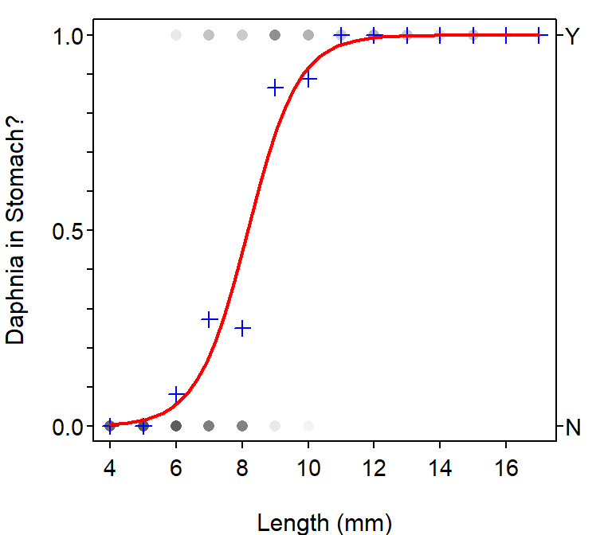

Ruffe Feeding
- The fitted-line plot (Figure 1) suggests that the logistic regression model fits the proportions of larval RUffe that had consumed a Daphnia fairly well as indicated by the relative closeness of the modeled line to the observed proportions (i.e., blue pluses).
- There is a significant relationship between the probability of consuming a Daphnia and the length of the ruffe as indicated by a p-value for the slope of the logistic regression (p<0.00005; Table 1) that is less than 0.05.
- The relationship between the probability of having consumed a Daphnia and the length of the ruffe cannot be described with any given number and must be described from Figure 1. From Figure 1 it is seen that this probability is “low” until about 6 mm, rises sharply to about 10 mm, and then stays high above 10 mm. Additionally, the odds of consuming a Daphnia are between 2.5388 and 6.1107 times greater for each increase of 1 mm in larval ruffe length (back-transformed from Table 2).
- The odds that a 6-mm long larval ruffe had consumed a Daphnia is 0.0584, which means that the probability that a 6-mm long larval ruffe had consumed a Daphnia is only 0.0584 times the probability that it had not consumed a Daphnia. This indicates that the 6-mm long larval ruffe was 17.1 times more likely to NOT have consumed a Daphnia then it was to have consumed a Daphnia.
- The probabiilty that a 6-mm long larval ruffe had consumed a Daphnia is 0.0552. This means that approximately one out of every 18.1 6-mm long larval ruffe will have consumed a Daphnia.

Figure 1: Fitted plot for the logistic regression of whether or not a larval ruffe had consumed a Daphnia and the length of the ruffe.
Table 1: Summary of the coefficients from the logistic regression of whether or not a larval ruffe had consumed a Daphnia and the length of the ruffe.
Estimate Std. Error z value Pr(>|z|)
(Intercept) -10.711628 1.7543434 -6.105776 1.023023e-09
len 1.311943 0.2216996 5.917661 3.265530e-09
Table 2: Confidence intervals for the coefficients from the logistic regression of whether or not a larval ruffe had consumed a Daphnia and the length of the ruffe.
2.5 % 97.5 %
(Intercept) -14.6654105 -7.709509
len 0.9316978 1.810041
R Appendix.
df <- read.csv("RuffeLarvalDiet.csv")
df <- filterD(df,loc=="Allouez")
glm1 <- glm(o.daph~len,data=df,family=binomial)
coef(glm1)
summary(glm1)
confint(glm1)
predict(glm1,data.frame(len=6),type="response")
fitPlot(glm1,xlab="Length (mm)",ylab="Daphnia in Stomach?",breaks=seq(3.5,17.5,1))